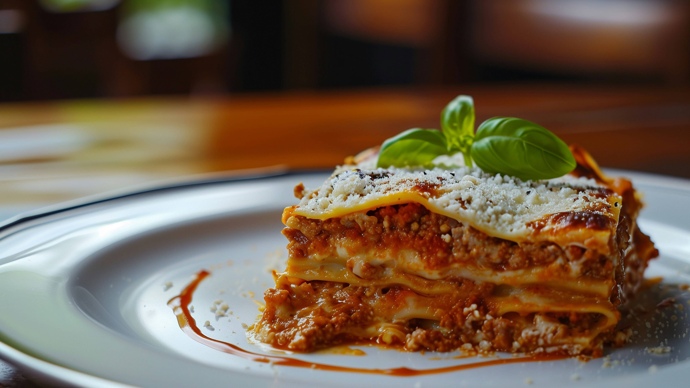

Le lasagne alla bolognese sono un'istituzione, la lasagna al forno per eccellenza, il piatto tipico della domenica.
Questo primo piatto ricco e saporito è originario dell'Emilia e, nello specifico, della città di Bologna.